MINGYI SHI, The University of Hong Kong, Hong Kong
HUANCHENG LIN, The University of Hong Kong, Hong Kong
TAKU KOMURA ∗ , The University of Hong Kong, Hong Kong
XUELIN CHEN ∗ , Adobe Research, United Kingdom

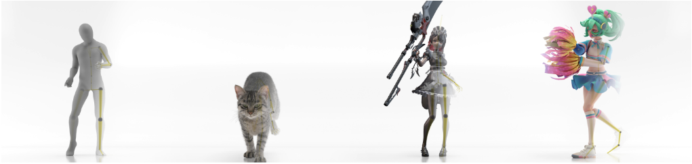
Production animation compression demands a unified compression algorithm that generalizes across heterogeneous characters with arbitrary skeletal topologies and diverse motion distributions. Existing learned motion encoders, however, are typically designed for fixed skeletons and relatively narrow motion domains, limiting their applicability in production environments. In this work, we present CurveCodec, a neural animation codec that achieves up to 3× higher compression than ACL, a production animation compression library widely adopted in modern video game engines, at matched mean reconstruction fidelity, although its worst-case (Max and P99) error remains higher than ACL's. Our key design principle is to place the learned prior at the smallest skeleton-independent motion unit: the local joint motion curve. Each curve is encoded as a first-frame state, a compact Fourier descriptor, and a sparse set of temporal anchors, from which a shared transformer decoder reconstructs the dense trajectory. This curvelevel formulation decouples reconstruction from skeletal topology while exposing anchor sparsity as a direct rate-distortion control. We further evaluate generalization to unseen skeletons and motion domains, characterize decoding cost relative to hand-engineered codecs, and explore its use as an intermediate representation for generative animation. Code and data for this paper are at https://github.com/AIGAnimation/CurveCodec.
CCS Concepts: · Computing methodologies → Motion processing.
∗ Co-corresponding authors.
Authors' Contact Information: Mingyi Shi, The University of Hong Kong, Hong Kong, Hong Kong, irubbly@gmail.com; Huancheng Lin, The University of Hong Kong, Hong Kong, Hong Kong, lamws233@gmail.com; Xuelin Chen, Adobe Research, London, United Kingdom, xuelin.chen.3d@gmail.com; Taku Komura, The University of Hong Kong, Hong Kong, Hong Kong, taku@cs.hku.hk.

This work is licensed under a Creative Commons Attribution 4.0 International License. SA Conference Papers '26, Kuala Lumpur, Malaysia © 2026 Copyright held by the owner/author(s). ACM ISBN 979-8-4007-2842-6/2026/12 https://doi.org/10.1145/3829340.3842192
Additional Key Words and Phrases: motion compression, neural codec, skeletal animation, rate-distortion control, motion representation
ACM Reference Format:
Mingyi Shi, Huancheng Lin, Xuelin Chen, and Taku Komura. 2026. Neural Codec for Skeletal Animation Compression. In SIGGRAPH Asia 2026 Conference Papers (SA Conference Papers '26), December 01-04, 2026, Kuala Lumpur, Malaysia. ACM, New York, NY, USA, 11 pages. https://doi.org/10. 1145/3829340.3842192
1 Introduction
A skeletal animation clip stores rotations, translations, and scales for tens to hundreds of joints. Compressing these data is therefore essential in modern production pipelines, where animation libraries must satisfy strict memory, storage, and streaming budgets. Beyond storage, compression is also a way to study motion representation: a codec that removes more redundancy must capture stronger priors over how articulated bodies move. These priors also support tasks such as motion synthesis, visualization, and search. Production codecs and learned motion encoders share this goal, but make different trade-offs. Production codecs must generalize across arbitrary skeletons and diverse motion distributions without retraining or manual tuning. Learned motion encoders achieve strong compression by learning data-driven priors, but these priors are typically tied to fixed skeletons and narrow motion domains. The core issue is where the prior is placed. Existing learned approaches model the distribution of poses, which tightly couples the representation to skeleton topology and character-specific motion patterns. Hand-engineered codecs avoid this limitation by using no learned prior, but this also limits the motion structure they can exploit.
ACL [Frechette 2023] represents the current industry standard for hand-engineered animation compression. It operates on uniformly sampled tracks, applies range reduction, classifies sub-tracks
SA Conference Papers '26, December 01-04, 2026, Kuala Lumpur, Malaysia.
as constant, default, or animated, and quantizes samples using one of several fixed bitrates under a global error threshold. Every compression decision is made independently per clip, and the codec contains no learned model of articulated motion. This design makes ACL portable and robust across arbitrary skeletons and unseen animations, but its rate-distortion ceiling is limited by what engineered quantization can extract from local signal statistics. Learned motion encoders occupy the opposite end of the spectrum. Motion VAEs [Ling et al. 2020], vector-quantized models [Yao et al. 2024], and residual VQ-VAE approaches [Guo et al. 2024] compress motion by learning latent priors over dynamics. However, they encode full-body poses or short motion windows directly, coupling the latent to the training skeleton, character morphology, and motion distribution. Generalizing to unseen characters or motion domains therefore often requires retraining or test-time optimization.
We close this gap with CurveCodec, a neural codec that compresses skeletal animation 3× more tightly than ACL at matched mean fidelity, though not yet at ACL's worst-case stability, while remaining deployable across arbitrary skeletons and unseen motions with no test-time retraining or optimization. CurveCodec achieves this by learning priors of the right kind: not over full-body pose sequence distributions, but over the distributions of local joint motion curves. Our key design principle is to learn at the smallest motion unit that remains skeleton-independent: the local transform sub-track. Unlike pose-space priors, priors over joint-wise temporal evolution capture simpler and more transferable structure that naturally generalizes across characters and skeletons. This allows CurveCodec to retain the portability of hand-engineered codecs while improving on their average rate-distortion trade-off.
Furthermore, we make a simple empirical observation: local joint motion curves are highly redundant over time. These sub-tracks are not arbitrary smooth signals; they often show bounded oscillation, phase-like trends, repeated returns to similar values, and sparse high-frequency deviations caused by contacts or sharp accelerations. Hence, we represent each dense sub-track compactly by its first-frame state together with a sparse set of temporal anchors that describe how the motion evolves, while the remaining samples are reconstructed by a learned decoder. This formulation naturally exposes anchor sparsity as a continuous rate-distortion control and generalizes across widely varying skeletal topologies, including the humanoid, stylized game-character, quadruped, and diverse animal skeletons used in our experiments.
Concretely, our codec decomposes each local joint motion curve into three signals: the first-frame state, a compact Fourier descriptor that summarizes the sub-track's overall trend, and a sparse set of anchors sampled along the sub-track. A single shared transformer decoder takes these signals and reconstructs the dense rotation, translation, or scale curve by infilling the motion between anchors. Anchor sparsity serves as the compression rate control knob, and the same decoder weights cover the full operating range.
We emphasize that CurveCodec is not intended to replace ACL in real-time runtime production settings. ACL decompresses poses in microseconds and operates without GPUs or learned weights, whereas CurveCodec requires neural inference during decoding. Instead, our goal is to explore a different point in the design space: how much additional compression becomes possible once lightweight neural decoding is acceptable. We build on ACL, crediting it as both the baseline and an inspiration. Two trends make this design point increasingly relevant: compute is shifting toward neural accelerators, and animation-rich content keeps growing with video-based mocap and generative motion. Accordingly, beyond in-domain compression, we evaluate generalization to unseen skeletons and motion domains and characterize decoding cost. We further explore the compressed representation in a downstream generative framework, suggesting that the learned codec can also provide a useful intermediate representation for motion generation. In summary, our contributions are as follows:
· A skeleton-agnostic neural codec. We introduce a neural animation compression framework that generalizes across arbitrary skeletal topologies and unseen motions without testtime retraining or optimization, achieving up to 3× higher compression ratios than ACL at matched mean reconstruction fidelity.
· Local jointmotionrepresentations.Weparameterize each curve as a first-frame state plus compact temporal deviations, making the learning problem simpler and exposing the periodic structure captured by our Fourier descriptor and sparse anchors.
· Aversatilemotionrepresentationbeyondcompression. We show that the compressed representation transfers directly to downstream generative animation tasks without architectural modification.
2 RelatedWork
Skeletal animation compression is a long-standing problem in computer graphics. Early work focused on making animation data smaller and faster to decode in production systems. More recent learned representations show that motion can also be organized into compact spaces that support reconstruction, synthesis, and control. Our motivation lies at the intersection of these goals: we want a representation that is compact enough to serve as a practical codec, while also serving as an intermediate representation for generative models that operate across arbitrary skeletons.
2.1 Hand-engineered Animation Compression
Before the growth of deep learning, the goal of animation compression was to remove temporal redundancy, inter-joint redundancy, and perceptually insignificant detail while preserving a motion that remains faithful. Early methods started by compressing animated meshes [Karni and Gotsman 2000; Rossignac 1999], where coherence appears directly in vertex trajectories. Arikan [Arikan 2006] marked an important shift from mesh trajectories to skeletal motion curves: instead of compressing the generated mesh animation, they converted joint angles into virtual marker trajectories, fitted short motion clips with cubic Bézier curves, and projected the resulting curve parameters into clustered PCA subspaces. Following work continued to exploit low-dimensional structure in skeletal motion, including segment-level PCA and spline interpolation [Liu and McMillan 2006], quadratic Bézier break-and-fit curves [Khan 2016], wavelet coefficient selection [Beaudoin et al. 2007; Lee and Lasenby 2008], and perceptually guided wavelet compression [Firouzmanesh et al. 2011].
Other methods began to exploit motion priors across a database through motion pattern indexing, repeated-motion analysis, adaptive curve fitting, and quantization [Gu et al. 2009; Lin et al. 2010], showing that skeletal motion contains substantial temporal, spatial, and cross-clip redundancy. Production codecs such as ACL [Frechette 2023] prioritize transform-track processing and extremely fast decoding; our method keeps this deployment-oriented framing but replaces independent per-track quantization with a learned decoder. Unlike spline, wavelet, or PCA codecs that rely on fixed analytic bases or database-specific subspaces, CurveCodec uses transmitted anchors to condition a motion-trained decoder rather than to define an interpolation curve directly, retaining an explicit bitstream and rate-distortion knob while replacing hand-designed interpolation with a data-driven curve prior. Our anchors also relate to keyframe extraction [Halit and Capin 2011; Lim and Thalmann 2001] and discrete curve simplification [Barkowsky et al. 2000], and our decoder to learned motion in-betweening [Harvey et al. 2020]; unlike these, we select anchors per scalar sub-track and train the in-filling decoder under a codec objective.
2.2 Implicit Representations
Implicit representations provide an alternative to hand-designed curve, wavelet, and PCA bases by representing a signal as a continuous function. They have been used for shapes, images, and videos, including signed-distance and occupancy fields [Mescheder et al. 2019; Park et al. 2019], Fourier-feature and sinusoidal coordinate networks [Sitzmann et al. 2020; Tancik et al. 2020], image compression with implicit networks [Dupont et al. 2021], and neural video representations [Chen et al. 2021]. For motion, NeMF [He et al. 2022] represents kinematic animation as a neural field over time, showing that skeletal trajectories can be reconstructed from a learned continuous representation rather than stored sample by sample. These works support the idea that continuous signals need not be stored only as dense samples; they can be reconstructed from compact coordinates, latent codes, or network weights. However, implicit representations often represent each instance through its own optimized weights, latent code, or per-signal fitting procedure. Our work takes the same functional view but makes it codec-like for skeletal animation: the learned function is a shared decoder, while the transmitted first-frame state, Fourier descriptor, and anchors form an explicit bitstream whose density controls the storagefidelity tradeoff without per-clip optimization.
2.3 Learned Motion Representations
Beyond compression, learned motion priors have been widely studied for synthesis, editing, control, retargeting, and pose estimation. Motion manifolds and deep motion representations show that valid character motion occupies a much smaller space than raw joint rotations [Holden et al. 2016, 2015]. VAE-style priors further use latent motion spaces for character control, action-conditioned synthesis, and robust pose estimation [Ling et al. 2020; Petrovich et al. 2021; Rempe et al. 2021]. Phase-based models such as DeepPhase and PhaseMP learn structured motion priors around periodic dynamics and timing [Shi et al. 2023; Starke et al. 2022], organizing motion by temporal structure much as our Fourier descriptor does. Together, these works show that motion priors are a powerful abstraction for animation, but they are usually designed around a fixed body representation, task, or dataset. Closest in spirit, Learned Motion Matching [Holden et al. 2020] amortizes an entire animation database into compact networks that replace explicit storage and search. We share the premise that a learned model can stand in for the data itself, but it targets interactive control on a fixed character, whereas CurveCodec targets near-lossless, skeleton-agnostic reconstruction with an explicit bitstream and rate-distortion control.
Cross-skeleton methods address part of this limitation by learning representations for retargeting or skeleton-agnostic animation tasks [Aberman et al. 2020; Lee et al. 2023; Villegas et al. 2018]. These methods are important because they move beyond a single skeleton layout, but their objectives remain different from animation compression: they are not optimized for explicit bitstreams, rate-distortion control, compressed size, and fast decoding. Our work makes the compressed representation itself the motion prior. It is trained under a codec objective, remains applicable to arbitrary skeletons, and can also serve as an intermediate representation for generative models.
3 Preliminaries
This section describes the data format and pipeline used by CurveCodec. Skeletal motion is stored as per-joint rotation, translation, and scale sub-tracks. We first describe this data structure, the compression ratio convention used by ACL [Frechette 2023], and then show the two-stage view of the full pipeline: deterministic preprocessing shared with ACL, followed by our learned codec. We describe this shared preprocessing stage for completeness. After these steps, every clip becomes a set of normalized one-dimensional signals, one per joint, transform component, and axis. These signals are the curves compressed by the learned codec in Sec. 4.
3.1 Skeletal Animation
Hierarchical representation. A skeleton is the spatial structure on which motion is defined. It contains 𝐽 joints connected as a rooted tree. Each joint has one parent except the root, and a child joint is evaluated relative to the transform of its parent. Different characters usually use different skeletons because their meshes require different control structures: a simple game character may use a few dozen joints, while a cinematic character or face can use several hundred. In this paper, skeleton-agnostic means that the same compression algorithm applies to any joint count 𝐽 and any tree topology, without retraining or per-skeleton tuning.
Per-joint transform tracks. At every sample, each joint stores a local transform relative to its parent. We write one clip as

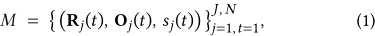
where R𝑗 (𝑡) ∈ ℝ4 is a unit quaternion rotation, O𝑗 (𝑡) ∈ ℝ3 is a translation, and 𝑠𝑗 (𝑡) ∈ ℝ3 is a per-axis scale. Following ACL
4 · Mingyi Shi, Huancheng Lin, Xuelin Chen, and Taku Komura
![Fig. 2. The two-stage compression pipeline and a compression example on over 200 hours ofmotion data. The first stage is deterministic preprocessing shared by ACL and CurveCodec. After preprocessing, both methods compress the same normalized one-dimensional signals. Starting from 97.32 GB of raw motion data, ACL produces a 3.44 GB compressed stream (28×), while CurveCodec produces a 1.01 GB stream (96×). The 96× number counts only the compressed motion stream; CurveCodec additionally uses a 19 MB decoder, which is fixed once trained and shared across all clips.](assets/0046-picture.png)
terminology, the time series of one transform component of one joint is a sub-track; the rotation, translation, and scale sub-tracks together form a joint's transform track. Animation tools often call these scalar streams channels; we use sub-track to stay aligned with ACL.
Raw and compressed size. Without compression, a clip stores ten 32-bit floating-point values per joint per sample: four for rotation, three for translation, and three for scale. We therefore use ACL's raw-size convention,

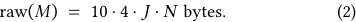
For example, a 3000-sample clip with 24 joints occupies 10 ⋅ 4 ⋅ 24 ⋅ 3000 = 2.88 MB before compression. A compression algorithm replaces this dense tensor with a structured bitstream and a decoder that reconstructs the original motion. We report compression ratio as

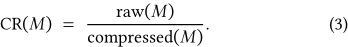
We use ratios in tables, because the actual bitstream size depends on quantization and side information rather than only on the number of stored samples.
Error metric. Motion compression is lossy because rotations, translations, and scales live in continuous spaces. Unlike scalar pixel values, a small componentwise error in a transform is not meaningful by itself; what matters is the spatial displacement it causes after the skeleton hierarchy is evaluated. We follow ACL's shell-distance metric [Frechette 2023]. For each joint, the error is measured at a virtual point placed at a fixed distance from the joint, which approximates the error a skinned mesh vertex would see. Unless stated otherwise, we use ACL's standard 3 cm shell distance and report mean error, max error, 99th-percentile error, and the fraction of samples below a 0.01 cm threshold. This gives a common fidelity scale for comparing motion compression algorithms.
3.2 Two-stage Compression Pipeline
As shown in Fig. 2, the full compression pipeline has two stages. The first stage is deterministic preprocessing, which removes structure that can be compressed without learning. The second stage is compression on the remaining one-dimensional curves. ACL handles this stage with hand-designed quantization, segmentation, and linear interpolation. In contrast, CurveCodec trains a single Transformer decoder to reconstruct the curve from a much sparser set of anchors, so the codec can represent shapes that linear interpolation would require many more samples to approximate. To keep the comparison uniform, every compressed size and compression ratio reported in this paper is computed under the same convention for all methods: transmitted values are counted as 32-bit floats, without any quantization or entropy coding.
Deterministic Preprocessing. The deterministic stage is shared by ACL and CurveCodec. Two operations account for most of its effect. First, many joints in production motion data have no meaningful transform variation in a clip. They still appear in the dense 𝐹 × 𝐽 × 10 raw layout because the format must reserve rotation, translation, and scale for every joint at every sample. We collapse such sub-tracks into a single constant value and remove the corresponding curves from the learned codec. The value is stored as side information and reused during reconstruction.
Quaternion sign. Second, unit quaternions have one redundant degree of freedom. For a rotation 𝑞 = (𝑥, 𝑦, 𝑧, 𝑤), the unit constraint requires 𝑥 2 + 𝑦 2 + 𝑧 2 + 𝑤 2 = 1. We therefore store and compress only the (𝑥, 𝑦 , 𝑧) curves and reconstruct 𝑤 at decode time as

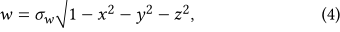
where 𝜎𝑤 ∈ {-1, 1} is the stored sign of 𝑤. We do not force 𝑤 to be positive: doing so can introduce sign flips in the (𝑥, 𝑦 , 𝑧) curves, creating discontinuities that are difficult for the learned decoder to model. Instead, we first choose quaternion signs consistently across adjacent frames so that the stored curves remain continuous, then transmit the one-bit 𝑤 sign needed to recover the full quaternion. This side information is negligible compared with the compressed curve payload.
Compression stage. After preprocessing, ACL compresses each remaining curve with a fully hand-designed procedure. It divides the curve into short segments, applies a tighter min and extent range per segment and axis, searches for a valid bit width under the shell-distance error threshold, and optionally strips samples that can be recovered by linear interpolation. This is enough to make ACL extremely fast and reliable, but it also exposes a clear limitation: ACL does not model time. There is no spline fitting, no FFT, no curve descriptor, and no inter-sample prediction beyond linear interpolation between neighboring samples. In ACL, a curve is essentially a list of independent scalar values stored per bone, sub-track, and component. CurveCodec replaces this view with a learned prior over curve dynamics, trained from a large motion database, achieving tighter compression ratios at matched mean fidelity.
4 Learned Curve Codec
This section describes the learned codec used in the second stage of Fig. 2. The preliminaries have already reduced a clip to normalized one-dimensional sub-tracks; here we specify how CurveCodec encodes each sub-track window into side information, a Fourier descriptor, and sparse anchors, and how a shared transformer reconstructs the dense curve. The encoder is deterministic and parameterfree. All learned capacity is placed in the decoder, so the bitstream remains explicit while the reconstruction model can learn motionspecific curve dynamics.
4.1 Delta-Normalized Curve Signals
Let 𝑥 raw ∈ ℝ𝑁 denote one scalar sub-track window after the shared preprocessing of Sec. 3.2. In our implementation a window contains at most 240 frames for efficient training and inference; we avoid assigning a fixed duration because the effective FPS can change under temporal-resolution augmentation. The model is applied per axis: one rotation, translation, or scale component of one joint produces one curve-level inference problem. This is the smallest motion unit that remains independent of skeleton topology. Windows tile each sub-track contiguously without overlap, and every window transmits its own first-frame state.
CurveCodec does not feed 𝑥 raw directly to the transformer. Instead, each window is converted to a delta-normalized curve

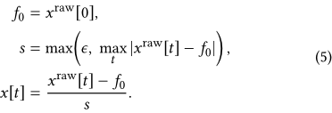
where 𝜖 prevents division by zero. The transformer operates only on 𝑥 ∈ [-1, 1]𝑁 , for which 𝑥[0] = 0. The physical first-frame value 𝑓0 and scale 𝑠 are transmitted as side information and are applied only after reconstruction. The first-frame state is not merely a normalization constant: it is the reference pose fromwhich the entire local curve is described. By transmitting this state exactly and asking the decoder to model only normalized temporal deviations, we remove absolute-coordinate variation from the learning problem and make curves from different joints and skeletons comparable.
The codec can therefore be written as

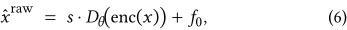
where enc is a deterministic encoder over the normalized curve and 𝐷𝜃 is the shared neural decoder.
4.2 Motion-Aware Bitstream
The deterministic encoder emits two complementary signals in normalized space:

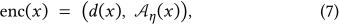
where 𝑑 captures the low-frequency trend and 𝒜𝜂 carries sparse pointwise evidence. The subscript 𝜂 denotes the anchor-selection threshold; the number of anchors is data-dependent rather than fixed.
The descriptor is obtained by applying a real Fourier transform to the delta-normalized curve,

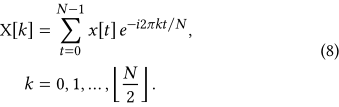
and retaining the 𝐾𝑓 lowest-frequency bins:

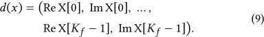
These coefficients summarize the phase-like, low-frequency envelope of the curve. We use a fixed Fourier descriptor rather than a learned encoder-side projection so that compression remains deterministic and requires no learned weights on the encoding side.
Anchors represent the complementary part of the signal: localized deviations that are not captured by the low-frequency descriptor. We select them from true turning points of the normalized curve. The curve is first smoothed with a short box filter; local maxima and minima are detected from sign changes in the first difference; each candidate is assigned a relative topographic prominence score; and candidates below threshold 𝜂 are discarded. The remaining anchors are greedily kept in descending prominence order with a small minimum temporal gap. The resulting set is

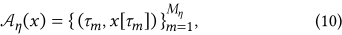
where 𝑀𝜂 varies by curve. Quiet intervals therefore receive few or no anchors, while busy intervals with contacts, turns, or sharp accelerations receive more. In our default setting, 𝜂 = 0.02 under relative prominence, selecting 2.81 anchors per 100 frames on average in our training data. Thus only about 2.8% of samples are transmitted as anchors. This adaptive policy is the main difference between the bitstream and a fixed-grid sampler: anchors are spent where the motion actually changes direction.
4.3 Masked Timeline Decoder
The decoder is a single masked-sequence transformer [Vaswani et al. 2017] applied independently to every normalized curve. Its input sequence has one global descriptor token followed by 𝑁 timeline tokens. The descriptor token is obtained by projecting 𝑑(𝑥) to the transformer width and adding a descriptor type embedding. Timeline token 𝑡 is known if 𝑡 = 0 or 𝑡 = 𝜏𝑚 for an anchor; in that case the normalized value 𝑥[𝑡] is projected with a shared value projection and receives a known-token type embedding. All other timeline tokens receive a learned mask vector and a mask-token type embedding.
This in-place timeline layout makes anchors load-bearing. The decoder cannot treat anchors as optional side context, because known values occupy the same temporal positions that must be reconstructed; masked positions can only infer their values by attending to the descriptor and to nearby known samples. We use bidirectional selfattention with rotary positional embeddings [Su et al. 2024], so relative temporal distances enter the attention pattern without making the sequence causal.
6 · Mingyi Shi, Huancheng Lin, Xuelin Chen, and Taku Komura

Let Z ∈ ℝ(1+𝑁 )×𝐻 denote the resulting token matrix. The decoder applies 𝐿 pre-norm transformer blocks,

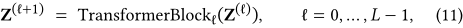
where each block contains RoPE self-attention followed by a feedforward network with sinusoidal activation. Specifically, the feedforward nonlinearity is sin(𝜔0𝑥) with 𝜔0 = 60, following the SIRENstyle bias toward high-frequency signal detail [Sitzmann et al. 2020]. A scalar head projects the 𝑁 timeline rows back to normalized values,

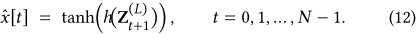
The tanh keeps predictions in the normalized range and avoids invalid quaternion components after denormalization.
Why a single shared decoder suffices. Delta normalization strips joint identity, skeleton, rest pose, units, and amplitude, so the decoder models only shared curve dynamics rather than joint semantics. Full weight sharing is thus the intended inductive bias, and it is what enables zero-shot transfer to unseen skeletons. We expect it to break for high-entropy, near-random curves (Sec. 5.2) and for tasks needing cross-joint constraints such as contact, which a persub-track model cannot observe (Sec. 7).
4.4 Reconstruction and Training
The decoder predicts every timeline position, including values already present in the bitstream. Before denormalization, we overwrite frame 0 and all anchor positions with their transmitted values. This hard substitution prevents the network from spending capacity on copying known values and makes the learned part of the problem exactly the in-filling of unknown samples. The raw reconstruction is then

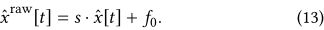
SA Conference Papers '26, December 01-04, 2026, Kuala Lumpur, Malaysia.
For rotations, the model predicts the three stored quaternion components independently, but the fidelity metric is three-dimensional. Training batches are therefore constructed in axis triplets: for each sampled joint-window, the sampler emits the 𝑥, 𝑦, and 𝑧 component curves contiguously, allowing the output to be reshaped into (𝑁, 3) before the loss is evaluated.
We train against the same shell-distance geometry used for evaluation. Let 𝑒𝑢,𝑡 be the 3 cm shell error for triplet 𝑢 at frame 𝑡, computed after reconstructing the quaternion 𝑤 component as in Sec. 3.1. The training objective is

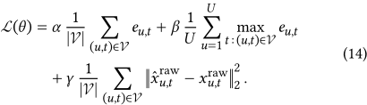
where 𝒱 is the set of valid, unpadded samples. The mean shell term optimizes average fidelity, the max-shell term directly penalizes worst-frame failures, and the raw 𝐿2 term stabilizes the droppedquaternion coordinates. We optimize the transformer with Lion [Chen et al. 2023], linear warmup, and cosine decay; the resolved hyperparameters are reported in the supplementary material.
Resolution augmentation. For datasets available at multiple temporal resolutions, we train from the highest-FPS version of each clip. During training, a clip is randomly downsampled by an integer factor when possible, using factors 2, 3, or 4. This exposes the decoder to the same motion at different temporal resolutions and expands its effective temporal receptive field without changing the underlying motion content.
4.5 Rate-Distortion Control at Inference
The compressed payload for one normalized curve contains three parts: the physical side information (𝑓0, 𝑠), the packed Fourier descriptor, and the selected anchor positions and values. The first two parts have fixed size for a given configuration; the anchor part changes with the motion and with the prominence threshold 𝜂. If 𝑏𝑓 , 𝑏𝑠 , 𝑏𝑑 , 𝑏𝜏 , and 𝑏𝑎 denote the corresponding bit widths, the perwindow rate is

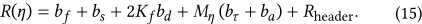
In our convention all bit widths are 32, and 𝑅header is a small fixed per-window header. Thus the rate-distortion knob is the number of anchors admitted by the extrema selector. Lowering 𝜂 accepts weaker extrema, increases 𝑀𝜂, and stores more anchor values, giving higher fidelity at a larger size. Raising 𝜂 keeps only the most prominent extrema, producing a smaller stream while asking the decoder to infer more of the curve from the descriptor and nearby anchors. The decoder weights are fixed throughout this sweep.
5 Experiments
We focus on four questions that together evaluate the main claims of the paper: 1) Does CurveCodec compress tighter than ACL at matched fidelity? 2) Can it generalize across unseen skeletons and out-of-distribution motion categories? 3) Which components are responsible for the improvement? 4) What runtime cost does neural decoding introduce?
5.1 Evaluation Setup
Training Data. Our training data consists of approximately 370 hours of human mocap data, drawn from open-source datasets such as MotionPersona [Shi et al. 2025] and from internally collected data; the data list will be released on the project page. This training set is chosen to cover a broad range of motion curves while reserving held-out splits for the generalization tests below.
Test Categories. We evaluate on five test sets that separate indomain reconstruction from cross-skeleton and out-of-domain generalization. First, the held-out 5% split of our motion database tests the same-domain, same-skeleton setting. Second, 100STYLE [Mason et al. 2022] contains strongly stylized humanoid locomotion and probes style-level distribution shift. Third, CMU [CMU 2019] (10 hours) tests same-domain motion on different skeletons. Fourth, a quadruped locomotion dataset [Zhang et al. 2018] (1 hour) tests cross-domain, cross-skeleton generalization on non-humanoid motion. Fifth, Truebones Zoo [Truebones Motions Animation Studios 2022] (1 hour) contains diverse animal motions and skeletons, providing the broadest cross-domain stress test.
Metrics. We follow ACL's reporting protocol. For storage, we report compression ratio (CR, higher is better) and compressed size (Size, lower is better). For reconstruction fidelity, we report the shell error (Max and Mean, lower is better), the 99th-percentile shell error (P99, lower is better), and, for the in-domain split, the fraction of samples below the 0.01 cm shell-error threshold (< 0.01 cm, higher is better). All shell errors use the 3 cm shell distance described in Sec. 3.1. The learned codec handles rotation sub-tracks; translation and scale sub-tracks are compressed with ACL's scheme for all methods.
Baselines. We compare against four baselines. A PCA codec, following the linear-subspace approach of Arikan [Arikan 2006], provides a classical low-dimensional baseline. ACL [Frechette 2023] is run in its default production configuration. MotionVAE [Ling et al. 2020] and MoConVQ [Yao et al. 2024], a VQ-VAE-based motion prior, represent learned motion-encoder baselines trained under their supported skeleton settings. Both target motion synthesis and control rather than near-lossless compression, and serve only as learned-representation references rather than directly comparable codecs. Note that ACL uses rate-distortion optimization to search for a favorable compression-ratio and fidelity trade-off, whereas the other baselines use fixed bitrates. This gives ACL an additional advantage in the comparison.
5.2 Compression Performance
We first evaluate compression on the held-out test split of our motion database. This split is large, in-domain, and uses skeletons covered by the training distribution, making it the cleanest setting for comparing rate-distortion behavior across all baselines. Tab. 1 reports matched-fidelity operating points: for each method, we choose the setting whose shell-error statistics are closest to ACL's defaultquality output, then compare compressed size and compression ratio under that fidelity constraint. Here, matched fidelity means matched mean error: CurveCodec matches ACL's mean shell error at a roughly 3× higher compression ratio, while ACL remains stronger on the worst-case Max and P99 statistics. Fig. 4 provides a qualitative comparison among ground truth, ACL, and our method at matched fidelity. We omit learned motion-encoder baselines from this figure because their reconstruction errors are substantially larger under the same compression setting, as shown in Tab. 1. Fig. 5 shows the full rate-distortion curve for CurveCodec by sweeping the extremaanchor threshold described in Sec. 4.5. This sweep doubles as a worst-case control: lowering 𝜂 from the default 0.02 admits more anchors and shrinks the Max/P99 gap to ACL at a reduced ratio. At the conservative end, Max error falls to about 0.08 cm, matching ACL, at about 60×, still 2.3× ACL's ratio.

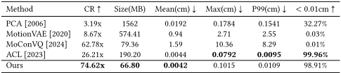
Recognized table text (check against the image)
| Method | CR ↑ | Size(MB) | Mean(cm) ↓ | Max(cm) ↓ | P99(cm) ↓ | < 0.01cm ↑ |
|---|---|---|---|---|---|---|
| PCA [2006] | 3.19x | 1562 | 0.0192 | 0.1784 | 0.1541 | 32.27% |
| MotionVAE [2020] | 8.67x | 574.41 | 0.94 | 2.71 | 2.55 | 0.03% |
| MoConVQ [2024] | 62.78x | 79.36 | 1.59 | 10.36 | 8.29 | 0.01% |
| ACL [2023] | 26.21x | 190.20 | 0.0044 | 0.0792 | 0.0095 | 99.96% |
| Ours | 74.62x | 66.80 | 0.0042 | 0.1015 | 0.0109 | 98.91% |
Failure cases. Our maximum-error outliers concentrate on nearrandom rotation tracks with little temporal structure. There the prominence-based anchor selector becomes too aggressive: few extrema pass the threshold, the descriptor cannot summarize the erratic residual, and the maximum error grows. Fig. 7 shows such a case; typical motions show no visible failures at the reported operating point.
5.3 Generalization Across Skeletons and Motions
We next test whether the learned curve prior remains useful outside the training distribution. Tab. 2 summarizes four test splits by skeleton novelty and motion-category novelty: 100STYLE evaluates strongly stylized human motion; CMU evaluates new skeletons with broadly human motion; the quadruped locomotion set evaluates a non-humanoid domain; and Truebones Zoo stresses both motion diversity and skeleton diversity. The worst-case gap

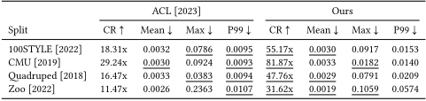
Recognized table text (check against the image)
| ACL [2023] | Ours | |||||||
|---|---|---|---|---|---|---|---|---|
| Split | CR ↑ | Mean ↓ | Max ↓ | P99 ↓ | CR ↑ | Mean ↓ | Max ↓ | P99 ↓ |
| 100STYLE [2022] | 18.31x | 0.0032 | 0.0786 | 0.0095 | 55.17x | 0.0030 | 0.0917 | 0.0153 |
| CMU [2019] | 29.24x | 0.0030 | 0.0924 | 0.0093 | 81.87x | 0.0033 | 0.0182 | 0.0140 |
| Quadruped [2018] | 16.47x | 0.0033 | 0.0383 | 0.0094 | 47.76x | 0.0029 | 0.0791 | 0.0209 |
| Zoo [2022] | 11.47x | 0.0026 | 0.2363 | 0.0107 | 31.62x | 0.0019 | 0.1059 | 0.0574 |
SA Conference Papers '26, December 01-04, 2026, Kuala Lumpur, Malaysia.
8 · Mingyi Shi, Huancheng Lin, Xuelin Chen, and Taku Komura
![Fig. 4. Qualitative reconstruction of CurveCodec on the held-out test split of our motion database. From left to right: the ground-truth skinned mesh; the reconstructed skeleton drawn with a spatial offset next to the ground truth for side-by-side comparison; the reconstructed skeleton overlaid on the groundtruth skeleton to expose residual deviation; and the mesh skinned from the decompressed motion. Ground truth is drawn in blue and our reconstruction in orange. Note that the second and third panels are two views of the same pair of skeletons: the offset view separates them spatially, while the overlay draws them in place. The overlay applies no error threshold or colour-coding rule; the two skeletons are simply rendered on top of each other, so wherever they coincide the blue and orange blend and read as pink, and any remaining blue or orange fringe is residual deviation. Results are shown at matched mean fidelity with ACL; learned motion-encoder baselines are omitted because their errors are substantially larger under the same compression setting.](assets/0127-picture.png)

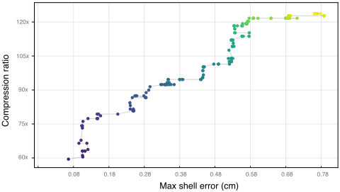
noted above persists here: on Zoo, our P99 error (0.0574 cm) is about five times ACL's (0.0107 cm), even though our mean and Max errors are lower. To visualize the learned representation, Fig. 6 projects curves from different test categories into two dimensions with t-SNE. The distributions from our motion database, 100STYLE, CMU, quadruped, and zoo motions overlap strongly. Their intradataset mean cosine similarities are all close to zero in the normalized feature space, suggesting that each dataset occupies a nearzero-mean, approximately isotropic distribution rather than a separated skeleton-specific cluster.
5.4 What Makes the Codec Work?
Tab. 3 ablates the components of CurveCodec. The key questions are whether delta normalization makes the per-axis learning problem easier, whether the Fourier descriptor captures long-range trend, whether extrema anchors outperform fixed samples, and whether the masked timeline decoder improves reconstruction beyond direct interpolation. Each component matters: without delta normalization, mean error grows nearly 5× at the same size; removing the Fourier descriptor is most damaging, as anchors alone lack global context; fixed-grid anchors lose on both ratio and error; and the interpolation decoder performs worst with the same anchors, so it is the learned in-filling prior that recovers the dense trajectory. More analysis and details are provided in the supplement.

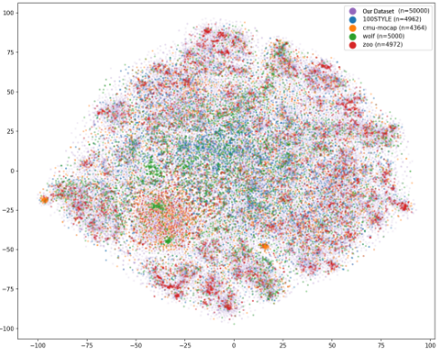

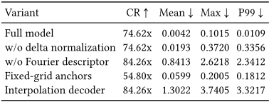
Recognized table text (check against the image)
| Variant | CR ↑ | Mean ↓ | Max ↓ | P99 ↓ |
|---|---|---|---|---|
| Full model | 74.62x | 0.0042 | 0.1015 | 0.0109 |
| w/o delta normalization | 74.62x | 0.0193 | 0.3720 | 0.3356 |
| w/o Fourier descriptor | 84.26x | 0.8413 | 2.6218 | 2.3412 |
| Fixed-grid anchors | 54.80x | 0.0599 | 0.2005 | 0.1812 |
| Interpolation decoder | 84.26x | 1.3022 | 3.7405 | 3.3217 |
5.5 Runtime Cost & Latency
Unlike ACL's lightweight CPU decoder, CurveCodec focuses on a GPU-friendly design and can decode many curves in parallel. The per-curve computation is small, so throughput is controlled mainly by batch size. Using our full motion database (over 200 hours) as an example, Fig. 8 reports full decompression time as the decoder batch size changes. Compression time is comparatively stable because the encoder is deterministic: on the same dataset, extremaanchor extraction takes about 45 minutes on a single Intel Xeon 8480C thread and about 2 minutes with 32 threads. For ACL, the benchmark takes about 105 seconds for compressing 10 hours of CMU data. Per-device consumer-hardware timings are reported in the supplementary material.
6 Applications
Beyond compression, the learned curve representation transfers directly to downstream tasks without architectural modification.
Motion super-resolution. CurveCodec canbeused formotion superresolution by rescaling the RoPE positions of the masked timeline tokens at decoding time. This reconstructs a denser temporal trajectory from the same anchors and descriptor without retraining, and can be interpreted as arbitrary-skeleton motion in-betweening from dense control points. Quantitatively, on a held-out test sequence upsampled 3× and 6× from a 10 FPS input, our decoder is substantially more accurate than both NeMF [He et al. 2022] and SLERP interpolation, by over 30× on every metric we report, without any per-clip optimization; the protocol, metric definitions, and full results are given in the supplementary material.

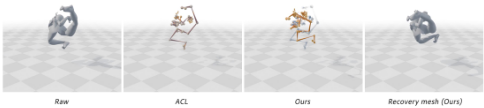

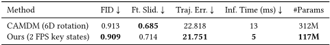
Recognized table text (check against the image)
| Method | FID ↓ | Ft. Slid. ↓ | Traj. Err. ↓ | Inf. Time (ms) ↓ | #Params |
|---|---|---|---|---|---|
| CAMDM (6D rotation) | 0.913 | 0.685 | 22.818 | 13 | 312M |
| Ours (2 FPS key states) | 0.909 | 0.714 | 21.751 | 5 | 117M |
Generative animation. CurveCodec can also serve as an intermediate representation for generative animation. With fixed-offset anchors, the generator predicts keyframes in the compressed space, while the codec decoder reconstructs the detailed temporal evolution between them. This lets the generator focus on high-level conditions and reduces frame-level artifacts caused by conflicting controls. We validate this design on real-time locomotion control: a diffusion-based controller trained in our compressed space matches CAMDM [Chen et al. 2024] across its full benchmark at the same 120 FPS runtime while using 3× fewer parameters (117M vs. 312M) and a 2.6× lower per-call inference time, as reported in Tab. 4.
7 Limitations
Our method trades decoding speed for compression ratio. The current decoder is most practical in GPU-enabled or offline settings; CPU decoding is possible but substantially slower, and ACL remains the better choice for out-of-the-box runtime decompression. The extrema-anchor selector is deterministic but not free: the current prominence computation costs 𝑂(𝑀𝑁 ) for 𝑀 extrema in an 𝑁 - frame window, with worst-case 𝑂(𝑁 2 ) complexity, although windows are short and the procedure can be optimized.
As a per-sub-track codec, CurveCodec also does not explicitly model cross-joint constraints such as foot contact or inverse kinematics; motion artifacts in original motion clips like foot sliding or contact inconsistency are therefore not actively corrected. This is a limitation shared by any per-sub-track formulation. Our goal is faithful reconstruction rather than motion correction, so we deliberately avoid constraints that would edit the input signal.
Finally, our fidelity advantage is an average one: CurveCodec matches ACL's mean shell error but not its Max and P99, so ACL remains the more predictable codec in the worst case.
8 Conclusion
We presented CurveCodec, a neural codec that places its learned prior on the smallest skeleton-independent unit of animation, the local joint motion curve. Encoding each curve as a first-frame state, a Fourier descriptor, and sparse extrema anchors, and reconstructing it with a single shared masked transformer, yields about 3× higher compression than ACL at matched mean fidelity, transfers zero-shot to unseen skeletons and motion domains, and exposes anchor density as one rate-distortion knob; the same representation carries over to tasks such as locomotion control. Faster decoding and tighter worst-case control are the next challenges.

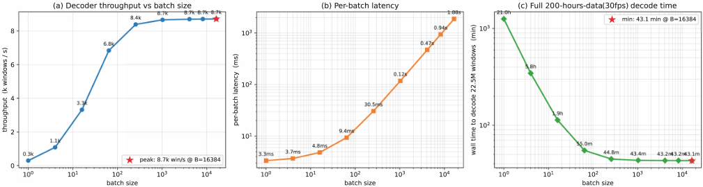
Acknowledgments
We thank Jun Xing, Tianshu Zhang, and Zhixin Piao for the early discussions on this project. This work was partially funded by the Research Grants Council of Hong Kong (Ref: 17216826) and by the Innovation and Technology Commission of the HKSAR Government under the ITSP-Platformgrant (Ref: ITS/335/23FP, ITS/469/24FP).
References
Kfir Aberman, Peizhuo Li, Dani Lischinski, Olga Sorkine-Hornung, Daniel Cohen-Or, and Baoquan Chen. 2020. Skeleton-aware networks for deep motion retargeting. ACM Transactions on Graphics (ToG) 39, 4 (2020), 62-1.
Okan Arikan. 2006. Compression of motion capture databases. In ACM SIGGRAPH 2006 Papers. 890-897.
Thomas Barkowsky, Longin Jan Latecki, and Kai-Florian Richter. 2000. Schematizing maps: Simplification of geographic shape by discrete curve evolution. In Spatial cognition II: Integrating abstract theories, empirical studies, formal methods, and practical applications. Springer, 41-53.
Philippe Beaudoin, Pierre Poulin, and Michiel van de Panne. 2007. Adapting wavelet compression to human motion capture clips. In Proceedings of Graphics Interface 2007. 313-318.
Hao Chen, Bo He, Hanyu Wang, Yixuan Ren, Ser Nam Lim, and Abhinav Shrivastava. 2021. Nerv: Neural representations for videos. Advances in Neural Information Processing Systems 34 (2021), 21557-21568.
Rui Chen, Mingyi Shi, Shaoli Huang, Ping Tan, Taku Komura, and Xuelin Chen. 2024. Taming Diffusion Probabilistic Models for Character Control. In ACM SIGGRAPH 2024 Conference Papers. Article 69, 10 pages.
Xiangning Chen, Chen Liang, Da Huang, Esteban Real, Kaiyuan Wang, Yao Liu, Hieu Pham, Xuanyi Dong, Thang Luong, Cho-Jui Hsieh, Yifeng Lu, andQuoc V. Le. 2023. Symbolic Discovery of Optimization Algorithms. In Advances in Neural Information Processing Systems, Vol. 36.
CMU. 2019. CMU Graphics Lab Motion Capture Database. http://mocap.cs.cmu.edu/ Emilien Dupont, Adam Goliński, Milad Alizadeh, Yee Whye Teh, and Arnaud Doucet. 2021. COIN: Compression with Implicit Neural Representations. In ICLR Workshop on Neural Compression: From Information Theory to Applications.
Amirhossein Firouzmanesh, Irene Cheng, and Anup Basu. 2011. Perceptually guided fast compression of 3-d motion capture data. IEEE Transactions on Multimedia 13, 4 (2011), 829-834.
Nicholas Frechette. 2023. Animation Compression Library. https://github.com/ nfrechette/acl. MIT License. Version 2.1.0 referenced in this paper..
Qin Gu, Jingliang Peng, and Zhigang Deng. 2009. Compression of human motion capture data using motion pattern indexing. In Computer Graphics Forum, Vol. 28. Wiley Online Library, 1-12.
Chuan Guo, Yuxuan Mu, Muhammad Gohar Javed, Sen Wang, and Li Cheng. 2024. Momask: Generative masked modeling of 3d human motions. In Proceedings of the IEEE/CVF Conference on Computer Vision and Pattern Recognition. 1900-1910.
Cihan Halit and Tolga Capin. 2011. Multiscale motion saliency for keyframe extraction from motion capture sequences. Computer Animation and Virtual Worlds 22, 1
(2011), 3-14.
Félix G Harvey, Mike Yurick, Derek Nowrouzezahrai, and Christopher Pal. 2020. Robust motion in-betweening. ACM Transactions on Graphics (TOG) 39, 4 (2020), 60-1. Chengan He, Jun Saito, James Zachary, Holly Rushmeier, and Yi Zhou. 2022. NeMF: Neural Motion Fields for Kinematic Animation. Advances in Neural Information Processing Systems 35 (2022), 4244-4256.
Daniel Holden, Oussama Kanoun, Maksym Perepichka, and Tiberiu Popa. 2020.
Learned motion matching. ACM Transactions on Graphics (ToG) 39, 4 (2020), 53-1. Daniel Holden, Jun Saito, and Taku Komura. 2016. A deep learning framework for character motion synthesis and editing. ACM Transactions on Graphics (ToG) 35, 4 (2016), 1-11.
Daniel Holden, Jun Saito, Taku Komura, and Thomas Joyce. 2015. Learning motion manifolds with convolutional autoencoders. In SIGGRAPH Asia 2015 technical briefs. 1-4.
Zachi Karni and Craig Gotsman. 2000. Spectral compression of mesh geometry. In Proceedings of the 27th annual conference on Computer graphics and interactive techniques. 279-286.
Murtaza Khan. 2016. An efficient algorithm for compression of motion capture signal using multidimensional quadratic Bézier curve break-and-fit method. Multidimensional Systems & Signal Processing 27, 1 (2016).
Chao-Hua Lee and Joan Lasenby. 2008. An efficient wavelet-based framework for articulated human motion compression. In International Symposium on Visual Computing. Springer, 75-86.
Sunmin Lee, Taeho Kang, Jungnam Park, Jehee Lee, and JungdamWon. 2023. SAME: Skeleton-Agnostic Motion Embedding for Character Animation. In SIGGRAPH Asia 2023 Conference Papers.
Ik Soo Lim and Daniel Thalmann. 2001. Key-posture extraction out of human motion data. In 2001 Conference Proceedings of the 23rd Annual International Conference of the IEEE Engineering in Medicine and Biology Society, Vol. 2. IEEE, 1167-1169.
I-Chen Lin, Jen-Yu Peng, Chao-Chih Lin, and Ming-Han Tsai. 2010. Adaptive motion data representation with repeated motion analysis. IEEE Transactions on Visualization and Computer Graphics 17, 4 (2010), 527-538.
Hung Yu Ling, Fabio Zinno, George Cheng, and Michiel Van De Panne. 2020. Character controllers using motion vaes. ACM Transactions on Graphics (TOG) 39, 4 (2020), 40-1.
Guodong Liu and Leonard McMillan. 2006. Segment-based human motion compression. In Proceedings of the 2006 ACM SIGGRAPH/Eurographics symposium on Computer animation. 127-135.
Ian Mason, Sebastian Starke, and Taku Komura. 2022. Real-time style modelling of human locomotion via feature-wise transformations and local motion phases. Proceedings of the ACM on Computer Graphics and Interactive Techniques 5, 1 (2022), 1-18.
Lars Mescheder, Michael Oechsle, Michael Niemeyer, Sebastian Nowozin, and Andreas Geiger. 2019. Occupancy networks: Learning 3d reconstruction in function space. In Proceedings of the IEEE/CVF conference on computer vision and pattern recognition. 4460-4470.
Jeong Joon Park, Peter Florence, Julian Straub, Richard Newcombe, and Steven Lovegrove. 2019. Deepsdf: Learning continuous signed distance functions for shape representation. In Proceedings of the IEEE/CVF conference on computer vision and pattern recognition. 165-174.
Mathis Petrovich, Michael J Black, and Gül Varol. 2021. Action-conditioned 3d human motion synthesis with transformer vae. In Proceedings of the IEEE/CVF international conference on computer vision. 10985-10995.
Davis Rempe, Tolga Birdal, Aaron Hertzmann, Jimei Yang, Srinath Sridhar, and Leonidas J Guibas. 2021. Humor: 3d human motion model for robust pose estimation. In Proceedings of the IEEE/CVF international conference on computer vision. 11488-11499.
Jarek Rossignac. 1999. Edgebreaker: Connectivity compression for triangle meshes. IEEE transactions on visualization and computer graphics 5, 1 (1999), 47-61.
Mingyi Shi, Wei Liu, Jidong Mei, Wangpok Tse, Rui Chen, Xuelin Chen, and Taku Komura. 2025. MotionPersona: Characteristics-aware Locomotion Control. In ACM SIGGRAPH 2025 Conference Papers.
Mingyi Shi, Sebastian Starke, Yuting Ye, Taku Komura, and Jungdam Won. 2023. PhaseMP: Robust 3D Pose Estimation via Phase-conditioned Human Motion Prior. In Proceedings of the IEEE/CVF International Conference on Computer Vision (ICCV). 14725-14737.
Vincent Sitzmann, Julien N.P. Martel, Alexander W. Bergman, David B. Lindell, and Gordon Wetzstein. 2020. Implicit Neural Representations with Periodic Activation Functions. In Advances in Neural Information Processing Systems, Vol. 33.
Sebastian Starke, Ian Mason, and Taku Komura. 2022. DeepPhase: Periodic autoencoders for learning motion phase manifolds. ACM Transactions on Graphics (ToG) 41, 4 (2022), 1-13.
Jianlin Su, Yu Lu, Shengfeng Pan, Ahmed Murtadha, Bo Wen, and Yunfeng Liu. 2024. RoFormer: Enhanced Transformer with Rotary Position Embedding. Neurocomputing 568 (2024), 127063.
Matthew Tancik, Pratul Srinivasan, Ben Mildenhall, Sara Fridovich-Keil, Nithin Raghavan, Utkarsh Singhal, Ravi Ramamoorthi, Jonathan Barron, and Ren Ng. 2020. Fourier features let networks learn high frequency functions in low dimensional domains. Advances in neural information processing systems 33 (2020), 7537-7547.
Truebones Motions Animation Studios. 2022. Truebones. https://truebones.gumroad. com/. Accessed: 2022-1-15.
Ashish Vaswani, Noam Shazeer, Niki Parmar, Jakob Uszkoreit, Llion Jones, Aidan N Gomez, Łukasz Kaiser, and Illia Polosukhin. 2017. Attention is all you need. In Advances in Neural Information Processing Systems, Vol. 30. 5998-6008.
Ruben Villegas, Jimei Yang, Duygu Ceylan, and Honglak Lee. 2018. Neural kinematic networks for unsupervised motion retargetting. In Proceedings of the IEEE conference on computer vision and pattern recognition. 8639-8648.
Heyuan Yao, Zhenhua Song, Yuyang Zhou, Tenglong Ao, Baoquan Chen, and Libin Liu. 2024. Moconvq: Unified physics-based motion control via scalable discrete representations. ACM Transactions on Graphics (TOG) 43, 4 (2024), 1-21.
He Zhang, Sebastian Starke, Taku Komura, and Jun Saito. 2018. Mode-adaptive neural networks for quadruped motion control. ACM Trans. Graph. 37, 4, Article 145 (July 2018), 11 pages. https://doi.org/10.1145/3197517.3201366